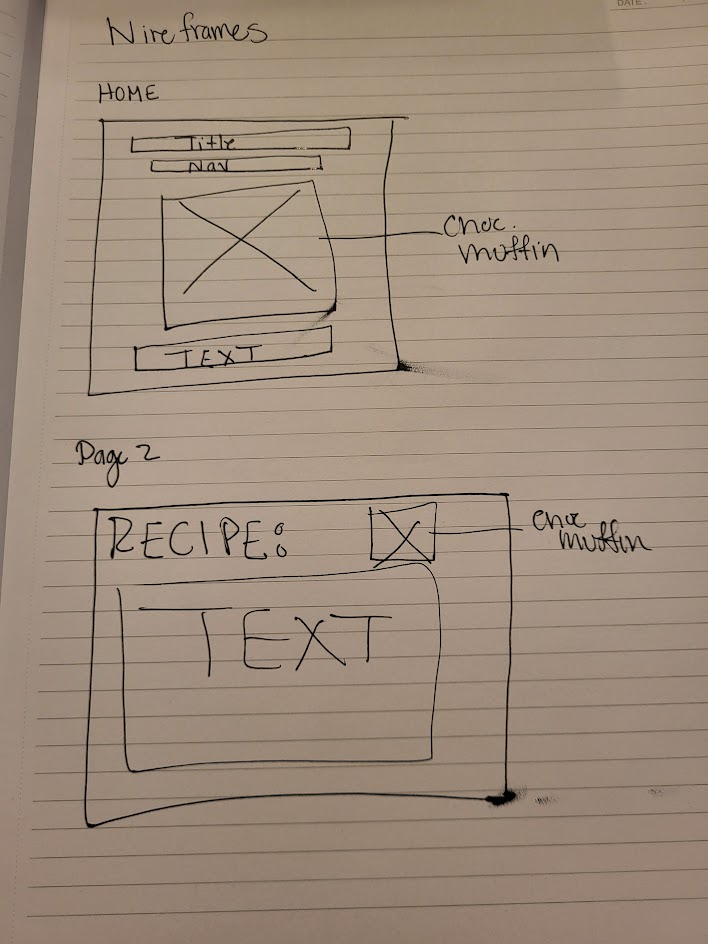

Overview
Purpose
My Purpose is to share this vegan recipe that I found and use with others who maybe be looking for a healther lifestyle but still are trying to figure out what they like.
People seeking recipes that are vegan
Young Adults who are looking to eat healthier but need help finding good vegan recipes.
Dynamic elements
I will use javascript to list out the recipe in full and maybe put in a print button to print the recipe.
Branding
Website Logo

Style Guide
Color Palette
Palette URL: https://coolors.co/396e94-e7c24f-a43312-381d2a-aabd8c| Primary | Secondary | Accent 1 | Accent 2 |
|---|---|---|---|
| [#DA8DAB] | [#FFAD75] | [#713324] | [#000000 |
Typography
Heading Font: [Arsenica Antiqua]
Paragraph Font: [Arial]
Vegan Chocolate Muffins
Vegan Chocolate Muffins are easy to make in one bowl and are full of chocolatey goodness! They are incredibly moist, rich, and loaded with melty chocolate chips.
Ingredients
- 2.5 cups of unsweetened soy milk
- 2 teaspooons of apple cider vinegar
- 3 cups all purpose flour
- 1 cup of unsweetened cocoa powder
- 2 cups of grandulated sugar
- 4 teaspoons of baking powder
- 1 teaspoon of salt
- 2 tablespoons of cornstarch
- 0.67 cup of canola oil or other neutral flavored oil
- 2 teaspoons of pure vanilla extract
- 3 cups of vegan chocolate chips
Navigation
Content
Home page
[content, images, data for the home page]
[Page 2]
[content, images, data for the subpage]
Wireframes

Home
[Any additional details about home that the wireframe does not make clear]
[Page 2]
[Any additional details about page 2 that the wireframe does not make clear]